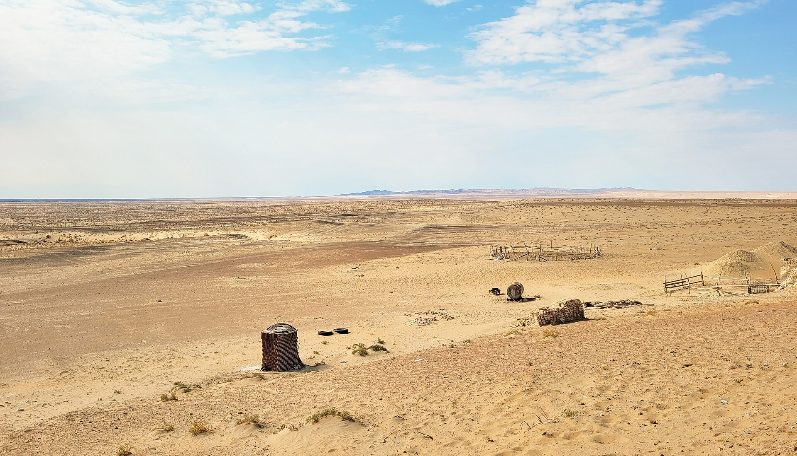

2026-yil yozi O‘zbekiston tarixidagi ikkinchi eng issiq yoz bo‘ldi
O‘zgidromet ma’lumotiga ko‘ra, mavsumiy harorat me’yordan 1,2–2,6 daraja yuqori bo‘ldi. Ayrim hududlarda esa kuzatuvlar tarixidagi eng issiq yoz qayd etildi; avgust oyi mamlakatning katta qismida rekord darajada issiq keldi.

O‘zbekiston Gidrometeorologiya xizmati markazi (O‘zgidromet) ma’lumotiga ko‘ra, 2026-yil yozi mamlakat meteorologik kuzatuvlari tarixidagi ikkinchi eng issiq yoz bo‘ldi. Bu haqda 10-sentabr kuni e’lon qilindi.
Mavsumiy o‘rtacha harorat iqlim me’yoridan 1,2–2,6 daraja yuqori qayd etildi. Mamlakatning ayrim hududlarida esa kuzatuvlar boshlanganidan buyon eng issiq yoz qayd etilgan.
Iyul — eng issiq oy
Mavsumning eng yuqori harorati iyul oyiga to‘g‘ri keldi. Hududlarning katta qismida havo harorati 43–45 darajaga yetdi. Janubiy hududlar va cho‘l zonasida esa 46–50 daraja qayd etildi.
Avgust: kuzatuvlar tarixidagi rekord
Avgust oyi alohida ajralib turdi. O‘zgidromet ma’lumotiga ko‘ra, o‘rtacha oylik havo harorati ko‘p yillik qiymatlardan 1,9–3 daraja yuqori bo‘ldi. Buxoro, Navoiy, Qashqadaryo va Surxondaryo viloyatlarining ayrim joylarida bu farq 3,1–3,6 darajagacha yetdi.
Mamlakatning aksariyat tumanlarida bunday issiq avgust O‘zbekiston meteorologik kuzatuvlari tarixida birinchi marta kuzatildi.
— O‘zgidromet ma’lumoti (Gazeta.uz tarjimasidan, 10.09.2026)
Shu bilan birga, oy o‘rtacha ko‘rsatkich bo‘yicha rekord issiq bo‘lgan bo‘lsa-da, maksimal haroratlar deyarli hamma joyda rekord darajaga yetmadi. Eng issiq kunlarda harorat 39–41 daraja atrofida bo‘ldi; shimol, janub va cho‘l zonasida 42–44 daraja, Termizda esa 45 daraja qayd etildi.
Raqamlarda
- 2026-yil yozi: tarixdagi 2-eng issiq yoz
- Mavsumiy harorat me’yordan: +1,2–2,6 °C
- Iyulda: 43–45 °C, cho‘l va janubda 46–50 °C
- Avgustda me’yordan: +1,9–3 °C
- Buxoro, Navoiy, Qashqadaryo, Surxondaryo: +3,1–3,6 °C
- Termizda maksimal: 45 °C
- 40 °C va undan yuqori kunlar: ayrim hududlarda 18–21 kun
Ayrim hududlarda havo harorati 40 daraja va undan yuqori bo‘lgan kunlar soni 18–21 kunni tashkil etdi.
Yog‘ingarchilik
2026-yil yozi quruq keldi. Mamlakatning katta qismida yog‘ingarchilik juda kam bo‘ldi yoki umuman kuzatilmadi. Mavsumiy yog‘inning asosiy qismi iyun oyiga to‘g‘ri keldi, biroq umumiy yozgi yog‘in miqdori aksariyat hududlarda o‘rtacha ko‘rsatkichdan past qoldi.
Nima uchun bu muhim
Yuqori harorat va past yog‘ingarchilik birgalikda sug‘orish suviga bo‘lgan talabni oshiradi. O‘zbekiston qishloq xo‘jaligi asosan sug‘orishga tayanadi; paxta, bug‘doy va meva-sabzavot yetishtirish suv ta’minotiga bevosita bog‘liq.
Mamlakat suv resurslarining katta qismi Amudaryo va Sirdaryo havzalaridan keladi. Bu daryolarning oqimi Pomir va Tyanshan muzliklaridan boshlanadi. Qirg‘iziston hukumati sentabr oyi boshida e’lon qilgan hujjatga ko‘ra, XXI asr boshidan buyon mamlakatdagi muzlik maydoni 16–17 foizga qisqargan.
Issiqlik yuklamasi elektr tarmog‘iga ham ta’sir qiladi: konditsionerlardan foydalanish hisobiga yozgi iste’mol keskin oshadi. So‘nggi yillarda O‘zbekistonda yozgi cho‘qqi yuklamalari muntazam ravishda ortib bormoqda.
Mintaqaviy manzara
Markaziy Osiyo iqlim o‘zgarishiga nisbatan sezgir mintaqalardan biri hisoblanadi. Qirg‘izistonda 1981–2020-yillarda o‘rtacha harorat har o‘n yillikda taxminan 0,28 daraja oshgan. Mintaqa daryolarining eng yuqori oqim davri esa tarixiy ko‘rsatkichlarga nisbatan taxminan 50 kunga oldinga surilgan.
Bu o‘zgarishlar sug‘orish jadvallari bilan tabiiy oqim jadvali o‘rtasida nomuvofiqlik yuzaga keltiradi: suv eng kerak bo‘lgan yoz oylarida emas, balki bahorda ko‘proq oqadi.
Kontekst
Hududlar kesimida
O‘zgidromet ma’lumotlariga ko‘ra, eng katta og‘ish mamlakatning janubiy va g‘arbiy hududlarida qayd etildi. Buxoro, Navoiy, Qashqadaryo va Surxondaryo viloyatlarining ayrim joylarida avgust oyi o‘rtacha harorati ko‘p yillik qiymatlardan 3,1–3,6 daraja yuqori bo‘ldi.
Bu to‘rt viloyat mamlakatning cho‘l va chala cho‘l zonasida joylashgan. Ularda paxta, bug‘doy, uzum va anor yetishtiriladi; qishloq xo‘jaligi to‘liq sug‘orishga tayanadi.
Termiz — Surxondaryo viloyati markazi va mamlakatning eng janubiy shahri — avgust oyida 45 daraja harorat qayd etdi. Shahar Afg‘oniston chegarasiga yaqin joylashgan va an’anaviy ravishda O‘zbekistonning eng issiq nuqtalaridan biri hisoblanadi.
Maksimal va o‘rtacha haroratning farqi
O‘zgidromet ma’lumotida muhim nuans qayd etilgan: avgust oyi o‘rtacha ko‘rsatkich bo‘yicha rekord issiq bo‘lgan bo‘lsa-da, maksimal haroratlar deyarli hamma joyda rekord darajaga yetmadi.
Ya’ni bu yozning o‘ziga xosligi alohida kunlardagi o‘ta yuqori haroratda emas, balki issiqlikning uzoq davom etishida edi. Eng issiq kunlarda harorat 39–41 daraja atrofida bo‘ldi; shimol, janub va cho‘l zonasida 42–44 daraja qayd etildi.
Ayrim hududlarda havo harorati 40 daraja va undan yuqori bo‘lgan kunlar soni 18–21 kunni tashkil etdi. Uzoq davom etgan issiqlik tuproqdagi namlikni kamaytiradi va o‘simliklarga bo‘lgan suv talabini oshiradi.
Qishloq xo‘jaligi va suvga ta’sir
Yuqori harorat va past yog‘ingarchilik birgalikda sug‘orish suviga bo‘lgan talabni oshiradi. O‘zbekiston qishloq xo‘jaligi asosan sug‘orishga tayanadi; paxta, bug‘doy va meva-sabzavot yetishtirish suv ta’minotiga bevosita bog‘liq.
Mamlakat suv resurslarining katta qismi Amudaryo va Sirdaryo havzalaridan keladi. Bu daryolarning oqimi Pomir va Tyanshan muzliklaridan boshlanadi — ya’ni O‘zbekistonning suv ta’minoti qo‘shni davlatlar hududidagi tog‘ tizmalarida shakllanadi.
Qirg‘iziston hukumati sentabr oyi boshida e’lon qilgan iqlimga moslashish rejasiga ko‘ra, XXI asr boshidan buyon mamlakatdagi muzlik maydoni 16–17 foizga qisqargan, daryolarning eng yuqori oqim davri esa taxminan 50 kunga oldinga surilgan.
Energetika tizimiga yuklama
Issiqlik elektr tarmog‘iga ham ta’sir qiladi: konditsionerlardan foydalanish hisobiga yozgi iste’mol keskin oshadi. So‘nggi yillarda O‘zbekistonda yozgi cho‘qqi yuklamalari muntazam ravishda ortib bormoqda.
Ayni paytda issiq havo gidroelektrostansiyalar ishlashiga bilvosita ta’sir qiladi: suv omborlaridagi bug‘lanish ortadi, oqim rejimi esa o‘zgaradi.
Mintaqaviy manzara
Markaziy Osiyo iqlim o‘zgarishiga nisbatan sezgir mintaqalardan biri hisoblanadi. Qirg‘izistonda 1981–2020-yillarda o‘rtacha harorat har o‘n yillikda taxminan 0,28 daraja oshgan — bu global o‘rtacha ko‘rsatkichdan yuqori.
Mintaqa daryolarining eng yuqori oqim davri tarixiy ko‘rsatkichlarga nisbatan taxminan 50 kunga oldinga surilgan. Bu sug‘orish jadvallari bilan tabiiy oqim jadvali o‘rtasida nomuvofiqlik yuzaga keltiradi: suv eng kerak bo‘lgan yoz oylarida emas, bahorda ko‘proq oqadi.
Jahon banki bahosiga ko‘ra, moslashish choralari ko‘rilmasa, Qirg‘iziston 2040-yilga borib yalpi ichki mahsulotning 2–3 foizini yo‘qotishi mumkin. Mintaqaning quyi oqimidagi davlatlar — O‘zbekiston va Qozog‘iston uchun ham xavflar shu tarzda baholanadi.
Siyosiy javob
1-sentabr kuni Bishkekdagi ShHT sammitida O‘zbekiston Prezidenti oziq-ovqat, suv va energiya xavfsizligi bo‘yicha yangi muvofiqlashtiruv mexanizmini hamda 2035-yilgacha suv va energiya samaradorligi bo‘yicha texnologik hamkorlik dasturini taklif qilgan edi.
Sentabr oyi boshida Toshkent va Samarqand BMT Oziq-ovqat va qishloq xo‘jaligi tashkilotining “Yashil shaharlar” tarmog‘iga qo‘shildi. Tarmoq shaharlarda yashil hududlarni kengaytirish va oziq-ovqat tizimlarini barqarorlashtirishga qaratilgan.
Ma’lumot manbai haqida
O‘zgidromet — O‘zbekiston Gidrometeorologiya xizmati markazi — mamlakatdagi meteorologik kuzatuvlar uchun mas’ul davlat tashkiloti. U kunlik ob-havo prognozlari, mavsumiy sharhlar va iqlim hisobotlarini e’lon qiladi.
O‘zbekiston hududida muntazam meteorologik kuzatuvlar XIX asr oxiridan boshlangan; tizimli tarmoq esa XX asrning birinchi yarmida shakllangan. Rasmiy xabarda yoz mavsumining birinchi o‘rindagi rekordi qaysi yilga tegishli ekani ko‘rsatilmagan.
O‘zgidromet ma’lumotlari meteorologik kuzatuvlar tarixiga asoslanadi. O‘zbekiston hududida muntazam meteorologik kuzatuvlar XIX asr oxiridan boshlangan; tizimli tarmoq esa XX asrning birinchi yarmida shakllangan.
Rasmiy xabarda yoz mavsumining birinchi o‘rindagi rekordi qaysi yilga tegishli ekani ko‘rsatilmagan.